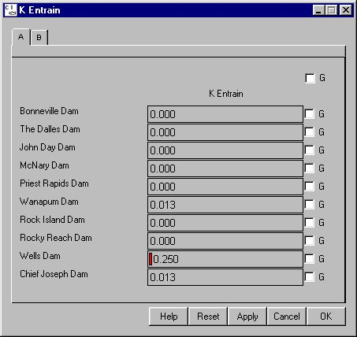

K Entrain
Selecting Dam K entrain opens a window for setting the entrainment coefficient at a dam. K entrain determines how much additional gas is added to the powerhouse flow in the tailrace as a function of the amount of water going over the spillway into the tailrace of the dam and the spill flow gas level. The higher the amount of spill the more gas that is added to the powerhouse flow with the level of total dissolved gas (tdg) in the powerhouse flow ranging from the forebay tdg level to the tdg level in the spill flow. A K entrain value of zero results in no entrainment and the powerhouse flow will exit the dam at the same gas level it entered. A value of 10 results in maximum entrainment and the powerhouse flow will exit the dam at the same gas level that the spill produced in the spill flow.
K entrain opens a window for setting the entrainment coefficient at a dam. K entrain determines how much additional gas is added to the powerhouse flow in the tailrace as a function of the amount of water going over the spillway into the tailrace of the dam and the spill flow gas level. The higher the amount of spill the more gas that is added to the powerhouse flow with the level of total dissolved gas (tdg) in the powerhouse flow ranging from the forebay tdg level to the tdg level in the spill flow. A K entrain value of zero results in no entrainment and the powerhouse flow will exit the dam at the same gas level it entered. A value of 10 results in maximum entrainment and the powerhouse flow will exit the dam at the same gas level that the spill produced in the spill flow.
K entrain is different from the Dam Gas Theta in that it determines how much more gas is added to the system where as the mixing parameter Gas Theta determines how much mixing is happening between the powerhouse and spill flows in the tailrace. Gas Theta will result in an exchange of gas between flows but the total amount of gas remains the same.
This is a Slider Input window. Click on the letter tabs to page through the list of dams.

K Entrain window